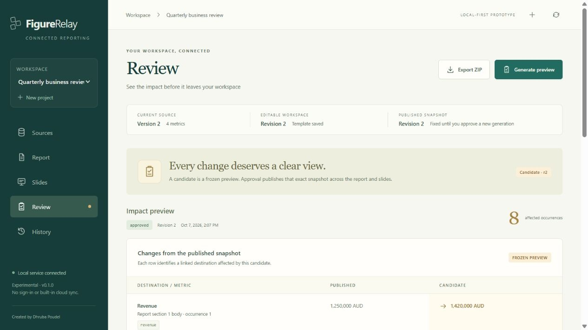

Case study 01 · Reporting software
FigureRelay
One named figure. Every linked occurrence. An explicit review before export.

Repeated figures create a consistency problem.
A figure can appear in a report, a slide deck and several sections within each. Updating one occurrence does not establish that the others still agree. The useful problem is therefore more specific than generating documents: connect each occurrence to a stable source key and make the review state visible.
I developed FigureRelay as a local prototype to explore that workflow. The project brings together source import, linked occurrences, document generation and approval into a single reviewable sequence.
Make the relationship explicit.
Stable keys rather than repeated manual entry
CSV data or an XLSX Metrics sheet supplies named values. Built-in templates use placeholders such as {{metric.key}}, allowing the same source figure to appear consistently in both a report and a presentation.
Approve an exact candidate
A generated candidate holds its revision, document bytes and manifest. Approval refers to that candidate, and export returns those approved files. This separates an editable working state from the particular result a person reviewed.
Keep the prototype understandable
A React and TypeScript interface talks to a Python FastAPI service. SQLite stores project state and local event records. The architecture keeps the browser interaction, generation logic and persistence responsibilities distinct.
Review the source, the candidate and the exported result.
The repository includes automated tests and documented checks for import, generation, approval and export. The important checks concern behaviour: missing or unsuitable source values, the revision attached to an approval, and the files returned from an export.
Excel formulas are a deliberate boundary. The importer reads available cached results; it does not run Excel’s calculation engine. A missing cached result blocks the import rather than silently inventing a value.
Document previews help inspect figures and occurrences. They do not certify Microsoft Word or PowerPoint layout, and the occurrence change list is not a general prose comparison.
Inspect setup instructions, tests and documented limitationsA working local prototype with a defined boundary.
FigureRelay is a personal, single-user application intended to run locally. It does not provide organisation accounts, independent approver identities, live external-system connectors or a production security and governance model.
Local event records make the prototype’s workflow inspectable, but the database remains locally writable; this is not a tamper-proof audit system. Built-in templates demonstrate the approach rather than support arbitrary Office document layouts.
The public repository contains the implementation, architecture notes and run instructions. Original code is licensed under Apache-2.0; third-party components retain their own terms.